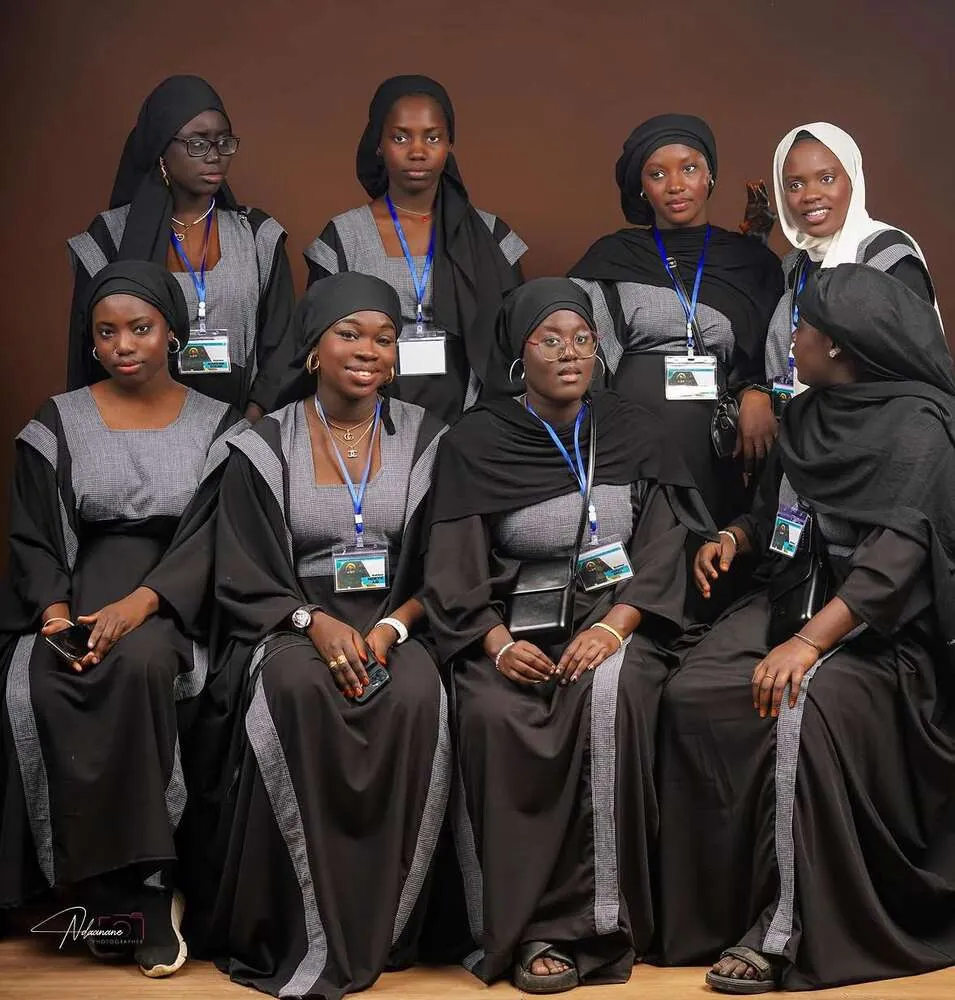
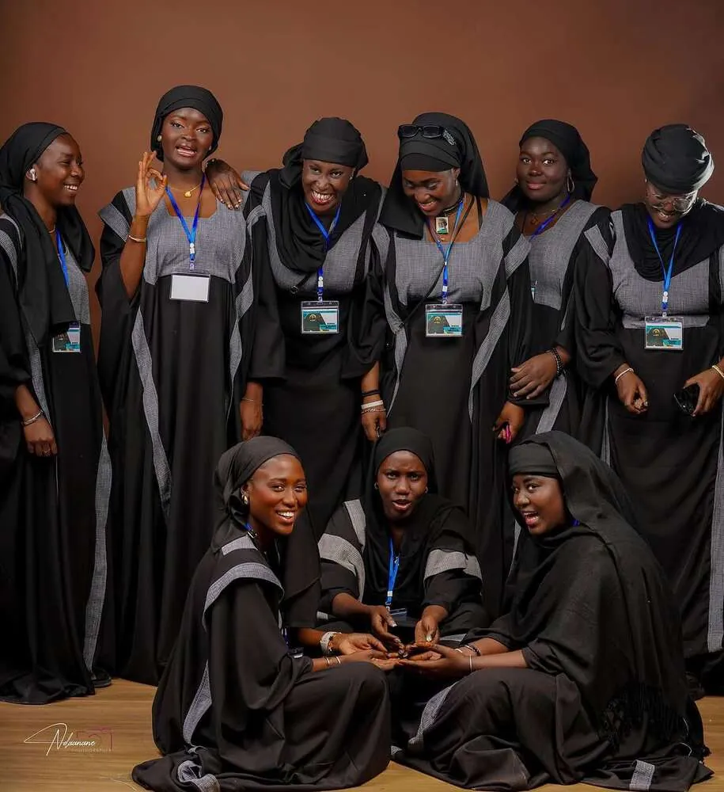

Dahira Touba Fano
La Dahira Touba Fano nasce dal desiderio di una comunità di discepoli di Cheikh Ahmadou Bamba di riunirsi nella fede, nel dhikr e nella solidarietà, lontano dalla terra natale ma uniti nello spirito della Mouridiyya.
La Dahira Touba Fano est née du désir d’une communauté de disciples de Cheikh Ahmadou Bamba de se réunir dans la foi, le dhikr et la solidarité, loin de la terre natale mais unis dans l’esprit de la Mouridiyya.
Siamo un piccolo dahira, ma con un grande cuore. Ogni sabato ci riuniamo a Keur Serigne Touba Fano, in Via dell’Artigianato a Monterado (AN), per pregare, studiare il Corano e le Xassida, e rafforzare i legami di fratellanza.
Nous sommes un petit dahira, mais avec un grand cœur. Chaque samedi nous nous réunissons à Keur Serigne Touba Fano, Via dell’Artigianato à Monterado (AN), pour prier, étudier le Coran et les Xassida, et renforcer les liens de fraternité.
Fede, lavoro e servizioFoi, travail et service
Seguiamo l’insegnamento di Cheikh Ahmadou Bamba e di Mame Cheikh Ibrahima Fall: il lavoro come forma di adorazione, la disciplina come via verso Dio, la solidarietà come dovere verso il prossimo.
Nous suivons l’enseignement de Cheikh Ahmadou Bamba et de Mame Cheikh Ibrahima Fall : le travail comme forme d’adoration, la discipline comme voie vers Dieu, la solidarité comme devoir envers le prochain.
Organizziamo eventi religiosi e incontri di formazione, e sosteniamo i membri della comunità nei momenti di difficoltà, fedeli al ndiguel delle nostre guide spirituali.
Nous organisons des événements religieux et des réunions de formation, et soutenons les membres de la communauté dans les moments difficiles, fidèles au ndiguel de nos guides spirituels.
